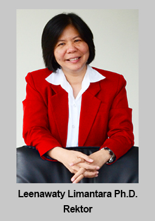

Sambutan Rektor

Salam Pendidikan,
Universitas Pembangunan Jaya (UPJ) didirikan melalui pengalaman panjang grup Jaya yang telah melahirkan berbagai mahakarya properti dan pembangunan infrastruktur monumentasi di DKI Jaya dan sekitarnya. Dirintis oleh entrepreneur senior dan terkemuka. Dr. (HC) Ir. Ciputra sejak tahun 1961, Pembangunan Jaya merupakan pioneer dan inovator bisnis modern yang unggul di sejumlah bidang usaha (infrastruktur, industri, pengembangan kota, dan pusat rekreasi). Setelah sukses berkontribusi nyata dalam Pembangunan Kota, Grup Jaya dengan tanggungjawab sosialnya membangun sekolah TK, SD, SMP, dan SMA dengan reputasi kualitas yang diakui sebagai salah satu yang terbaik di Indonesia serta mengharumkan nama Indonesia di kancah Internasional melalui olahraga badmintonnya. Berbekal reputasi kualitas unggul, kepeloporan dan inovasi. Grup Jaya mengembangkan Universitas Pembangunan Jaya sebagai pusat pendidikan tinggi unggulan dengan keunggulan dibidang Urban lifestyle and Urban Development.
Jaya Group turut mendukung pengembangan mutu akademik dengan menyediakan "laboratorium hidup" dan praktisi bagi mahasiswa UPJ untuk terlibat langsung mempelajari berbagai proyek seperti proyek Jaya Ancol, pembuatan jalan tol, pembangungan berbagai sarana properti bagi kota Jakarta serta belajar langsung dari pakarnya, dari tokoh-tokoh profesional dan entrepreneur nasional dan internasional yang ada di Grup Jaya maupun rekanannya. Bahkan, PT Pembangunan Jaya dengan 23 anak perusahaannya seperti Jaya Real Property Tbk (JRP), Jaya Konstruksi Manggala Pratama Tbk (JAKON), PT Jaya Obayashi, PT Arkonin, PT Jaya Teknik Indonesia, PT Jaya Trade Indonesia, PT Jaya Beton, PT Jaya Ancol dan lain-lainnya, memberikan prioritas bagi alumni UPJ untuk mengembangkan karir di Pembangunan Jaya Group.
Berbekal motto "Mendidik Manusia Jaya yang berintegritas, professional dan memiliki spirit entrepreneur" sistem pendidikan di UPJ diumpamakan seperti dua sisi koin, mempersiapkan manusia yang utuh dengan softskills dan hardskills untuk menjadi sarjana yang mampu mengatasi segala bentuk tantangan dalam masyarakat dan giat berperan serta menyumbangkan pemikiran dan keterampilannya ke lingkungan dimana mereka berada. Untuk itu, UPJ membangun suasana akademik yang langsung terkait dengan masyarakat.
Be the right people with the right skills and the right values with UPJ!